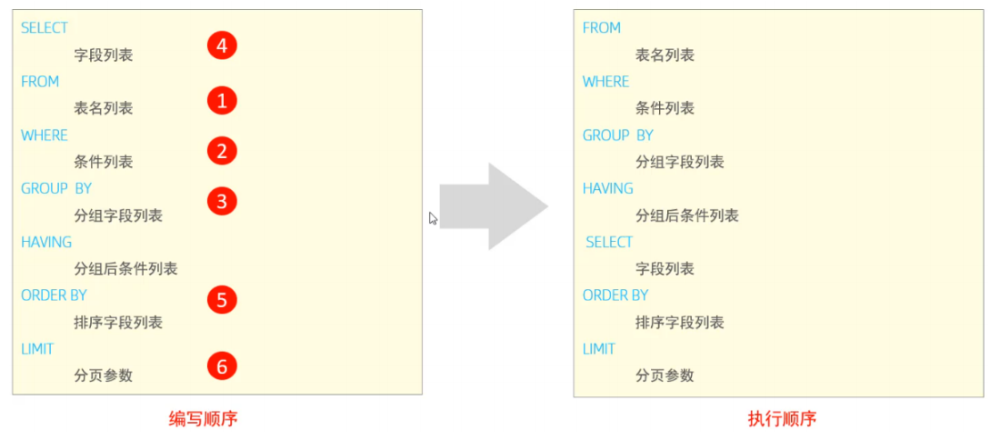
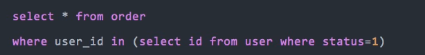
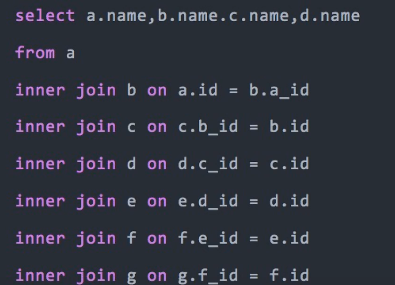
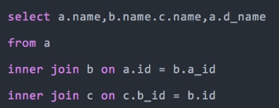

SQL学习
SQL语句
SQL基础
DDL
DDL（Data Definition Language）语句：
数据定义语言，主要是进行定义/改变表的结构、数据类型、表之间的链接等操作。
常用关键字：create、drop、alter等。
模板
1 | CREATE TABLE 表名{ |
1 | ALTER TABLE 表名 |
DML
DML（Data Manipulation Language）语句:
数据操纵语言，主要是对数据进行增加、删除、修改操作。语句关键字有
INSERT、UPDATE、DELETE 等。
1 | //插入单值、多值 |
DQL
DQL（Data Query
Language）语句：数据查询语言，主要是对数据进行查询操作。常用关键字有
SELECT、FROM、WHERE 等。
查询结构：
1 | SELECT |
基础查询
简单查询多字段：
1 | SELECT 字段1, 字段2, 字段3 ... FROM 表名 ; |
别名：
1 | SELECT 字段1 [ AS 别名1 ] , 字段2 [ AS 别名2 ] ... FROM 表名; 1 |
去重：
1 | SELECT DISTINCT 字段列表 FROM 表名; |
条件查询
1 | SELECT 字段列表 FROM 表名 WHERE 条件列表 ; |
条件列表：
| 比较运算符 | 功能 |
|---|---|
| > | 大于 |
| >= | 大于等于 |
| < | 小于 |
| <= | 小于等于 |
| = | 等于 |
| <> 或 != | 不等于 |
| between...and.... | 在某个范围之内(含最小、最大值) |
| in (. . . ) | 在in之后的列表中的值，多选一 |
| LIKE 占位符 | 模糊匹配 ( _匹配单个字符, % 匹配任意个字符) |
| IS NULL | 是null值 |
常用逻辑运算符：
| 逻辑运算符 | 功能 |
|---|---|
| AND 或 && | 并且 (多个条件同时成立) |
| OR 或 || | 或者 (多个条件任意一个成立) |
| NOT 或 ！ | 非 |
聚合函数
针对一列数据，纵向计算
常见聚合函数
| 函数 | |
|---|---|
| count | 统计数量 |
| max | 最大值 |
| min | 最小值 |
| avg | 平均值 |
| sum | 求和 |
语法：
一般配合分组使用：
1 | SELECT 聚合函数(字段列表) FROM 表名 ; |
案例
A. 统计该企业员工数量
1 | select count(*) from emp;-- 统计的是总记录数 |
对于count聚合函数，统计符合条件的总记录数，还可以通过 count(数字/字符串)的形式进行统计查询，比如：
1 | select count(1) from emp; |
分组查询
基础语法：
1 | select 字段 from 表 where 分组前条件 group by 分组字段... [having 分组后过滤条件] |
where与having区别
执行时机不同：where是分组之前进行过滤，不满足where条件，不参与分组；而having是分组之后对结果进行过滤。
判断条件不同：where不能对聚合函数进行判断，而having可以
分组查询结果条目
根据哪个字段分组，一般结果的个数与这个字段可能出现的结果个数相同
案例
根据性别分组 , 统计男性员工 和 女性员工的数量
1 | select gender, count(id) from emp group by gender; |
查询年龄小于45的员工 , 并根据工作地址分组 , 获取员工数量大于等于3的工作地址
1 | select age, address, count(*) as address_count from emp where age < 45 group by address having address_count > 3; |
统计各个工作地址上班的男性及女性员工的数量
1 | select address, gender, count(*) '数量' from emp group by gender , address; |
常用规则
- 分组排序：除开带有聚合函数计算那一列，select中出现的其它列都要加到group by 列。
排序查询
语法：
1 | SELECT 字段列表 FROM 表名 ORDER BY 字段1 排序方式1 , 字段2 排序方式2 ; |
- ASC：升序
- DESC：降序
从第1条数据开始升序/降序
分页查询
语法：
1 | SELECT 字段列表 FROM 表名 LIMIT 起始索引, 查询记录数 ; |
注意：
注意事项:
- 起始索引从0开始，起始索引 = （查询页码 - 1）* 每页显示记录数。
- 分页查询是数据库的方言，不同的数据库有不同的实现，MySQL中是LIMIT。
- 如果查询的是第一页数据，起始索引可以省略，直接简写为 limit 10。
查询语句执行顺序

DCL
DCL（Data Control Language）语句：
数据控制语言，主要是用来设置/更改数据库用户权限。常用关键字有
GRANT、REVOKE 等。
管理用户
查询用户：
1 | select * from mysql.user; |
结果分析：
Host代表当前用户访问的主机, 如果为localhost, 仅代表只能够在当前本机访问，是不可以远程访问的。
User代表的是访问该数据库的用户名。在MySQL中需要通过Host和User来唯一标识一个用户
创建：
1 | CREATE USER '用户名' @ '主机名' IDENTIFIED BY '密码'; |
修改密码：
1 | ALTER USER '用户名'@ '主机名' IDENTIFIED WITH mysql_native_password BY '新密码' ; |
删除用户：
1 | DROP USER '用户名'@'主机名' ; |
权限控制
权限表：
| 权限 | 描述 |
|---|---|
| SELECT | 允许用户查询（读取）表中的数据 |
| INSERT | 允许用户向表中插入新数据 |
| UPDATE | 允许用户修改表中的数据 |
| DELETE | 允许用户删除表中的数据 |
| CREATE | 允许用户创建新的数据库或表 |
| DROP | 允许用户删除数据库或表 |
| ALTER | 允许用户修改已存在的数据库结构（表结构） |
| GRANT | 允许用户授予或撤销权限给其他用户 |
| RELOAD | 允许用户重新加载服务器配置 |
| SHUTDOWN | 允许用户关闭数据库服务器 |
| PROCESS | 允许用户查看其他用户的进程 |
| FILE | 允许用户读取或写入文件系统 |
| SUPER | 允许用户执行特殊的超级权限操作 |
| ALL PRIVILEGES | 允许用户拥有所有权限 |
查询权限
1 | SHOW GRANTS FOR '用户名'@'主机名' ; |
授予权限
1 | GRANT 权限列表 ON 数据库名.表名 TO '用户名'@'主机名'; |
撤销权限
1 | REVOKE 权限列表 ON 数据库名.表名 FROM '用户名'@'主机名'; |
SQL优化
优化步骤：
- 通过慢查日志定位到执行效率低的sql语句
- explain分析sql执行计划
SQL执行计划
explian 执行计划各个字段的含义：
id: Query Optimizer 所选定的执行计划中的查询编号。
select_type: 所使用的查询类型，主要有几种查询类型：

table: 显示执行这一步所访问的数据库中的表的名称。
partitions: 查询分区表匹配的分区，非分区表显示 NULL 。
type: 查询表所使用的方式，类型如下：

他们的性能由好到差依次是：system > const > eq_ref > ref > full_text > ref_or_null > unique_subquery > index_subquery > range > index_merge > index > all 。
- possible_keys: 查询可能用到的索引。
- key_len: 用到的索引长度。
- ref: 展示将那些列或者常量与命中的索引比较。
- rows: 执行这次查询扫描的行数。
- filtered: 过滤行数百分比，最大值是100，当显示100时候，表示没有过滤行， rows显示了检查的估计行数，乘以过滤百分比将显示与下表连接的行数。例如，如果行数为1000，过滤条件为50.00（50％），则与下表联接的行数为1000×50％= 500。
- extra: 执行查询额外的条件。
慢sql优化
避免select *
原因1：数据库要翻译 * 为全部字段，耗时
原因2：利用覆盖索引
使用prepare
mysql8.0以后适用。
- 语句样式: MySQL中,可用如下方法: PREPARE stmt_name FROM SELECT * FROM 表名称 WHERE id_pk > (？* ？) ORDER BY id_pk ASC LIMIT M
- 适应场景: 大数据量
- 原因: 索引扫描,速度会很快. prepare语句又比一般的查询语句快一点。
高效分页
根据数据量选择： ，，，，，，，
数据量少：直接
limit 起始索引， 每页数据数据量多：
1
2select id,name,age
from user limit 1000000,20;该条sql会查询1000020条数据，然后取后面20条，很消耗资源，优化如下：
1
2
3select id,name,age
from user
where id > 1000000 limit 20;
exists与in的替换
查询整条行数据
两者的适用场景：
- in适合于外表大而内表小的情况
- EXISTS适合于外表小而内表大的情况
外表：要查询的总表，内表：条件表（查询中生成的临时表也算）
两者的本质：
- in 是把外表和子表作 hash 连接
- exists是对外表作loop循环，每次loop循环再对子表进行查询。
IN 语句案例
1 | SELECT * FROM A WHERE id IN (SELECT id FROM B); |
查出B表中的所有id字段并缓存到内存，检查A表的id是否与B表中的id相等，如果相等则将A表的记录加入结果集中（实际上是和A表进行连接，笛卡尔积）,直到遍历完A表的所有记录.
EXISTS 语句案例
1 | SELECT * FROM a WHERE EXISTS(SELECT 1 FROM b WHERE B.id = A.id); |
只对大表循环，然后每次循环去判断大表中某一条数据是否在小表中出现，这一次操作相当于一次exists()函数的执行。
最佳实践：
A表是大表，B表是子表（小表）
A表有10000条记录,B表有1000000条记录,那么exists()会执行10000次去判断A表中的id是否与B表中的id相等.
A表有10000条记录,B表有100000000条记录,那么exists()还是执行10000次,因为它只执行A.length次,可见B表数据越多,越适合exists()发挥效果.
A表有10000条记录,B表有100条记录,那么exists()还是执行10000次,还不如使用in()遍历10000*100次,因为in()是在内存里遍历比较,而exists()需要查询数据库,我们都知道查询数据库所消耗的性能更高,而内存比较很快.
用union all 代替 union
union ：需要去重排序，遍历，更耗时
小表驱动大表（嵌套查询）
- exists：左边小表，右边大表
- in：左边大表，右边小表
 in关键字会优先查询in里面的子查询语句，这样缩减了大表的搜寻范围。
批量操作，但是一次性数据不要传输太多
多用limit
案例：查询最新的一条订单数据
低级思路：查询全部数据，然后倒序排序，随后在内存中取第一条数据。
高级思路：
1
2
3
4
5select id, create_time
from order
where user_id = 123
order by create_time
limit 1in中的条件不能太多
分批查询，in中固定500（假设）个值。这些要放在业务代码层面解决。
用连接查询代替子查询
1
2select * from order
where user_id in (select id from user where status=1)改成连接查询
1
2
3select o.* from order o
inner join user u on o.user_id = u.id
where u.status = 1join表的数量不宜过多
反例：
 修正：
添加冗余字段。
 控制索引的数量
不超过5个
选择合理的字段类型
提升group by效率
反例：
1
2
3select user_id,user_name from order
group by user_id
having user_id <= 200;优化：
先缩小范围再分组
1
2
3select user_id,user_name from order
where user_id <= 200
group by user_id
索引优化
索引优化在以下方面：
- 防止索引失效
- 尽量保证区分度大的索引先进行区分
- 建立索引的优化
索引失效场景
最左匹配原则
假设一个数据表，有a、b、c以及其它字段，a、b、c字段会建立索引，那失效情况如下：
where条件只要包含a，编译器会自动优化，优先按照最左匹配，匹配a这一列。
- 查询条件是a、b、c时，无论是什么顺序，由于优化器优化，都会走INDEX_A_B_C联合索引；
- 查询条件是a、b时，会走联合索引；
- 查询条件是a、c时，也会走联合索引，但是Extra信息里面多了一行：Using index condition，意思是先条件过滤索引，过滤完索引后找到所有符合索引条件的数据行，随后用WHERE子句中的其他条件去过滤这些数据行，这种情况只有a条件用到联合索引，c条件回表到聚簇索引过滤。
- 查询条件是b、c时，不走联合索引；
- 查询条件是a时，会走联合索引；
- 查询条件是b时，不走联合索引；
- 查询条件是c时，不走联合索引；
隐式转换
有个表，索引为：KEY idx_mobile (mobile)
执行sql查询：
1 | select * from _user where mobile=12345678901 |
由于mobile是字符类型，=后面的类型应该也是字符类型，如果写成数字类型，mysql会进行隐式转换，使得索引失效
ASC和DESC混用
排序场景中，多个列混用asc、desc会导致索引失效。
1 | select * from _t where a=1 order by b desc, c asc |
desc 和asc混用时会导致索引失效
根据区分度建立索引
varchar类型的列做索引
这种针对字符串场景应用的比较多，如下业务场景：
查询用户的电话，但是用户的电话都要加密（md5加密算法），如何提高查询效率。
使用：select count(distinct left(mobile_md5, 5) )/ count(*) as 区分度 from XX.users
结果：0.08044
前五个字符的区分度就能达到80%，可以以该列的前五个字符建立索引。
SQL案例
去重
给定一张表user，字段为(ID, NAME) ID列不重复，NAME列重复。
现有需求，要求把NAME重复的元素删除，但要保留一个。
查找重复的数据：
1 | select ID, NAME, count(*) as count |
查找要保留的数据：
1 | select * |
方案一
先查出来要保留的数据，然后ID不在这里面的全删：
1 | delete from user |
方案二
通过两个表关联的方式来删除数据，这个方式效率比较高，推荐使用这种方式。自己和自己关联，关联的条件就是我们判断数据是否为重复数据的key。除此之外，最重要的一个条件是：两个表的id关联条件，这个是删除保留数据的关键条件。
查询重复数据
1 | select a.*,b.* |
写法一：
1 | delete a.* |